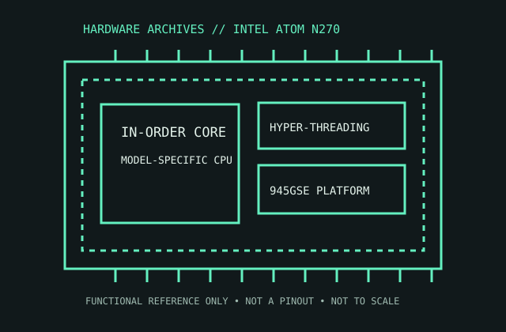

[ MOBILE AND LOW-POWER PROCESSORS // IDENTIFIED PROCESSOR ]
Intel Atom N270
The Atom N270 powered early netbooks as a low-power single-core processor with Hyper-Threading and a separate companion-chip platform.

MODEL IDENTIFICATION: Intel Atom N270. Compare the printed part number, speed grade, package, cache configuration, and stepping with the cited documentation; do not transfer one variant’s limits to another.
Recorded specifications
| Cataloged part | Intel Atom N270 |
|---|---|
| Era / family | Intel Atom N200 series / Diamondville, introduced 2008; N270 netbook SKU. |
| Key specifications | 1 core / 2 threads; 1.60 GHz; 533 MT/s FSB; 512 KB L2; 45 nm; 2.5 W TDP; 22 × 22 mm micro-FCBGA package. |
| Interface / fit | Soldered BGA processor for the Intel 945GSE netbook platform; not a user-replaceable socket CPU. The board chipset, BIOS, and cooling design must match the N270 platform. |
| Variant distinction | The N270 is not the dual-core Atom 330 or desktop Atom 230. N270’s Hyper-Threading exposes two logical threads from one core. |
Compatibility and variants
- Soldered BGA processor for the Intel 945GSE netbook platform; not a user-replaceable socket CPU. The board chipset, BIOS, and cooling design must match the N270 platform.
- The N270 is not the dual-core Atom 330 or desktop Atom 230. N270’s Hyper-Threading exposes two logical threads from one core.
- Confirm the system manufacturer’s exact processor support list, firmware minimum, board revision, power/thermal envelope, and memory requirements before installation.
Service and archival notes
Archive the complete netbook model and system-board revision; this BGA part requires board-level rework, not socket handling. Keep original fanless/heatsink airflow and platform chipset details.
Preserve provenance and a record of the exact marking, condition, tested board/platform, firmware, cooling, memory configuration, and test conditions. Separate published specification limits from observations made on a particular surviving system.
Sources & further reading
- Intel Atom N270 exact-model specification cross-referenceModel-specific clock, cache, package, and power reference.
- Intel Atom N200/300-series datasheet — Diamondville/N270 platform specificationsManufacturer documentation for the Atom N270 platform and related 200-series products.
- Intel Atom launch history — netbook-era platform contextIntel product-history material for Atom and the low-power netbook generation.
Third-party reference pages and document archives are finding aids. The matching manufacturer datasheet, product specification, and board support documentation take precedence for the exact revision and host.